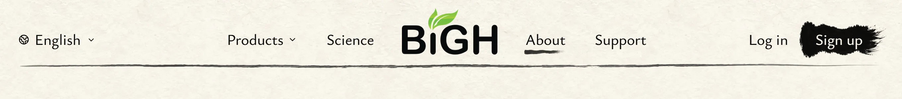

<title>California Menu Bar</title>
<meta name="claude:viewport-fit-sides" content="cover">
<link rel="preconnect" href="https://fonts.googleapis.com">
<link rel="preconnect" href="https://fonts.gstatic.com" crossorigin>
<link rel="stylesheet" href="https://fonts.googleapis.com/css2?family=Ysabeau:wght@500;600&family=Ysabeau+Office:wght@400;500&display=swap">
<style>
  /* Layout: one calm column of rice paper; each comparison is one frame with a Today / A / B switch. */
  :root {
    --paper: #f8f3ea;
    --sheet: #fffdf8;
    --ink: #1a1714;
    --grey: #6a625a;
    --rule: #e3dbcf;
    --umber: #5e4535;
    --ochre: #b8893e;
    --display: "Ysabeau", "Iowan Old Style", Georgia, serif;
    --text: "Ysabeau Office", "Segoe UI", system-ui, sans-serif;
  }
  @media (prefers-color-scheme: dark) {
    :root:not([data-theme="light"]) {
      --paper: #1d1a17; --sheet: #26221e; --ink: #f1ebe1; --grey: #b3a99d; --rule: #3a342e;
      --umber: #c9a58a; --ochre: #d9ad62; color-scheme: dark;
    }
  }
  :root[data-theme="dark"] {
    --paper: #1d1a17; --sheet: #26221e; --ink: #f1ebe1; --grey: #b3a99d; --rule: #3a342e;
    --umber: #c9a58a; --ochre: #d9ad62; color-scheme: dark;
  }

  body {
    background: var(--paper);
    color: var(--ink);
    font: 18px/1.55 var(--text);
  }
  main {
    max-width: 1080px;
    margin: 0 auto;
    padding-block: 40px 72px;
    padding-left: max(16px, env(safe-area-inset-left, 0px));
    padding-right: max(16px, env(safe-area-inset-right, 0px));
    display: grid;
    gap: 56px;
  }
  h1, h2 { font-family: var(--display); font-weight: 600; line-height: 1.12; text-wrap: balance; margin: 0; }
  h1 { font-size: clamp(34px, 5vw, 52px); }
  h2 { font-size: clamp(24px, 3vw, 30px); }
  p { margin: 0; max-width: 64ch; }
  .lead { font-size: 20px; color: var(--grey); margin-top: 10px; }

  header { display: grid; gap: 4px; }

  .ideas { display: grid; grid-template-columns: repeat(auto-fit, minmax(280px, 1fr)); gap: 16px; }
  .idea {
    background: var(--sheet);
    border: 1px solid var(--rule);
    border-radius: 6px;
    padding: 20px 22px;
    display: grid;
    gap: 10px;
    align-content: start;
  }
  .idea h3 { margin: 0; font: 600 22px/1.2 var(--display); display: flex; gap: 10px; align-items: baseline; }
  .tag {
    font: 600 15px/1 var(--text); letter-spacing: 0.04em;
    border: 1.5px solid currentColor; border-radius: 99px; padding: 4px 9px;
  }
  .idea.a .tag { color: var(--umber); }
  .idea.b .tag { color: var(--ochre); }
  .idea p { font-size: 17px; }
  .idea .why { color: var(--grey); font-size: 16px; }
  .score { font-weight: 500; }
  .pick { font-size: 19px; }
  .pick strong { font-family: var(--display); font-size: 21px; }

  section { display: grid; gap: 14px; }
  .head { display: flex; flex-wrap: wrap; align-items: center; justify-content: space-between; gap: 12px; }
  .note { color: var(--grey); font-size: 16px; }

  .switch { display: inline-flex; border: 1.5px solid var(--ink); border-radius: 99px; padding: 3px; gap: 2px; }
  .switch button {
    font: 500 16px/1 var(--text); color: var(--ink); background: none; border: 0;
    border-radius: 99px; min-height: 44px; min-width: 64px; padding: 0 16px; cursor: pointer;
  }
  .switch button[aria-pressed="true"] { background: var(--ink); color: var(--paper); }
  .switch button:focus-visible { outline: 2px solid var(--ochre); outline-offset: 2px; }

  figure { margin: 0; }
  .frame img {
    display: block; width: 100%; height: auto; max-width: 100%;
    border: 1px solid var(--rule); border-radius: 4px;
  }
  .stack { display: grid; gap: 10px; }
  .row { display: grid; grid-template-columns: 92px minmax(0, 1fr); gap: 12px; align-items: center; }
  .row b { font: 600 17px/1.2 var(--display); }
  .row picture { min-width: 0; }
  .row img { display: block; width: 100%; height: auto; max-width: 100%; border-radius: 4px; }
  img[hidden] { display: none !important; }
  @media (max-width: 560px) {
    .row { grid-template-columns: minmax(0, 1fr); gap: 4px; }
  }
  .phones { display: grid; grid-template-columns: repeat(2, minmax(0, 1fr)); gap: 14px; max-width: 640px; }
  figcaption { color: var(--grey); font-size: 15px; margin-top: 6px; }

  footer { color: var(--grey); font-size: 15px; border-top: 1px solid var(--rule); padding-top: 16px; }
</style>

<main>
  <header>
    <h1>California menu bar</h1>
    <p class="lead">Two ways to warm the bar, tried on the real site. Nothing on the site has changed yet.</p>
  </header>

  <div class="ideas">
    <article class="idea a">
      <h3><span class="tag">A</span> Warm ink</h3>
      <p>Same bar. Every black brush mark turns warm brown: the line under the bar, the stroke under the page you're on, and Sign up / Menu.</p>
      <p class="why"><span class="score">My score 8/10.</span> Quiet, and it matches the redwood bark and the hummingbird. Held back: Sign up keeps its brush shape, so a sharp eye may still see calligraphy. The page's own buttons stay black.</p>
    </article>
    <article class="idea b">
      <h3><span class="tag">B</span> Golden ridge</h3>
      <p>A, plus the line under the bar becomes a low ridge of far-off golden hills, painted in watercolour.</p>
      <p class="why"><span class="score">My score 7.5/10.</span> It says California at once. Held back: it shows on every page. On About its hills sit right above the meadow's hills, and on the homepage they sit above the sun.</p>
    </article>
  </div>

  <p class="pick"><strong>My pick: A.</strong> The bar is on every page, so it should stay quiet and let each page's painting lead.</p>

  <section>
    <div class="head"><h2>The bar, close up</h2></div>
    <div class="stack">
      <div class="row"><b>Today</b><picture><source media="(max-width: 700px)" srcset="img/today-bar-tight.webp" width="1180" height="240"></picture></div>
      <div class="row"><b>A</b><picture><source media="(max-width: 700px)" srcset="img/a-bar-tight.webp" width="1180" height="240"></picture></div>
      <div class="row"><b>B</b><picture><source media="(max-width: 700px)" srcset="img/b-bar-tight.webp" width="1180" height="240"></picture></div>
    </div>
  </section>

  <section data-compare="home">
    <div class="head">
      <h2>Homepage</h2>
      <div class="switch" role="group" aria-label="Show homepage version"></div>
    </div>
    <figure class="frame"></figure>
  </section>

  <section data-compare="about">
    <div class="head">
      <h2>About page</h2>
      <div class="switch" role="group" aria-label="Show About page version"></div>
    </div>
    <figure class="frame"></figure>
  </section>

  <section data-compare="home-settled">
    <div class="head">
      <h2>Scrolled down</h2>
      <div class="switch" role="group" aria-label="Show scrolled version"></div>
    </div>
    <p class="note">Once you scroll, the bar settles onto paper. In B its paper runs a little lower, under the hills.</p>
    <figure class="frame"></figure>
  </section>

  <section data-compare="phone">
    <div class="head">
      <h2>Phone</h2>
      <div class="switch" role="group" aria-label="Show phone version"></div>
    </div>
    <div class="phones">
      <figure class="frame" data-shot="phone-home"><figcaption>First screen</figcaption></figure>
      <figure class="frame" data-shot="phone-menu"><figcaption>Menu open</figcaption></figure>
    </div>
  </section>

  <footer>
    Mockups: the new colours and the ridge painting are laid over the live demo site in the browser. B's ridge is a new Codex watercolour.
  </footer>
</main>

<script>
  const VERSIONS = [["today", "Today"], ["a", "A"], ["b", "B"]];
  const SIZES = { "home": [1600, 900], "about": [1600, 900], "home-settled": [1600, 900], "phone-home": [780, 1688], "phone-menu": [780, 1688] };

  document.querySelectorAll("[data-compare]").forEach((section) => {
    const key = section.dataset.compare;
    const frames = [...section.querySelectorAll(".frame")];
    frames.forEach((frame) => {
      const shot = frame.dataset.shot || key;
      const [w, h] = SIZES[shot];
      const cap = frame.querySelector("figcaption");
      VERSIONS.forEach(([v, label]) => {
        const img = document.createElement("img");
        img.src = `img/${v}-${shot}.webp`;
        img.width = w;
        img.height = h;
        img.alt = `${label === "Today" ? "Today" : "Idea " + label}: ${shot.replace("-", " ")}`;
        img.dataset.v = v;
        img.hidden = v !== "a";
        frame.insertBefore(img, cap);
      });
    });
    const sw = section.querySelector(".switch");
    VERSIONS.forEach(([v, label]) => {
      const b = document.createElement("button");
      b.type = "button";
      b.textContent = label;
      b.setAttribute("aria-pressed", String(v === "a"));
      b.addEventListener("click", () => {
        sw.querySelectorAll("button").forEach((x) => x.setAttribute("aria-pressed", String(x === b)));
        section.querySelectorAll("img[data-v]").forEach((img) => { img.hidden = img.dataset.v !== v; });
      });
      sw.appendChild(b);
    });
  });
</script>
